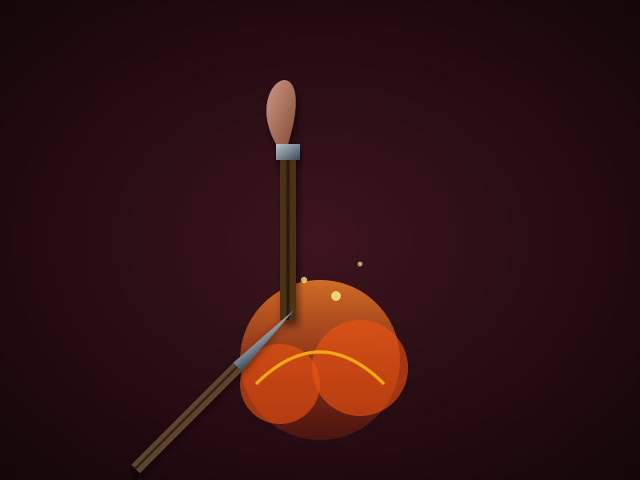

The Sushruta Protocols
Perhaps one of the most astonishing microbiological innovations in ancient times belonged to Sushruta, who performed complex plastic surgeries and cataract removal. He strictly mandated that all steel and iron surgical instruments (yantras) be heated in intensely hot embers until glowing red before touching an open wound.
Additionally, operating rooms were subjected to Dhupana—the burning of specific anti-bacterial woods and resins to fill the air with phenol-rich smoke, effectively scrubbing the surgical theater of airborne pathogens.
